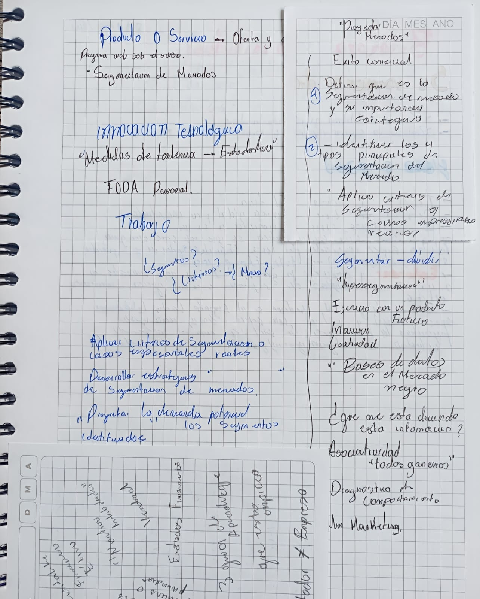
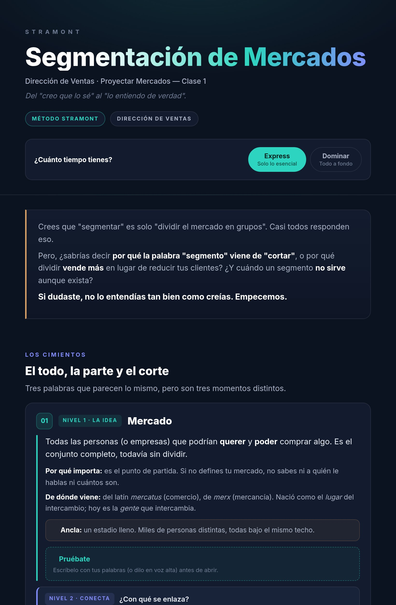

Envíanos tus apuntes.
En menos de 24 horas recibirás una guía diseñada para comprender más rápido, recordar mejor y llegar preparado al examen.
La diferencia no es estudiar más horas. Es estudiar con el material correcto.


No necesitas aprender un método nuevo. Sigue tomando apuntes como siempre.
En clase, en tu cuaderno, tablet o portátil. No necesitas aprender un método nuevo ni cambiar tu forma de estudiar.
Fotos, PDF, capturas o documentos. Nosotros nos encargamos del resto.
Transformamos tus apuntes en una guía diseñada para comprender más rápido, recordar mejor y estudiar con mayor confianza.
Recibirás gratis el Kit Stramont de toma de apuntes para que tus próximas clases sean todavía más fáciles de transformar.
⚡ Mientras otros siguen organizando información, tú ya estarás estudiando.
Cada guía incorpora técnicas respaldadas por décadas de investigación para ayudarte a comprender más rápido y recordar durante más tiempo.
Recibe tu guía en menos de 24 horas para empezar a estudiar mientras la clase sigue fresca en tu memoria.
No pierdas horas organizando información o creando resúmenes. Envíanos tus apuntes y recibe una guía lista para estudiar en menos de 24 horas.
La investigación sobre aprendizaje lleva décadas estudiando qué métodos ayudan realmente a comprender y recordar. Por eso cada guía Stramont incorpora estrategias respaldadas por evidencia para aprender más en menos tiempo.
Tu cerebro aprende más cuando intenta recuperar la información por sí mismo que cuando solo relee.
Distribuir el estudio mejora la retención y reduce las maratones de última hora.
Tu cerebro procesa elementos visuales mucho más rápido. Diseñamos cada guía para que entiendas los conceptos complejos con un solo vistazo.
Entender el porqué de las ideas hace que permanezcan más tiempo en la memoria.
Los conceptos abstractos se vuelven claros y fáciles de aplicar.
Practicar diferentes conceptos mejora el rendimiento en situaciones reales y exámenes.
Respaldado por investigación en ciencia del aprendizaje (Dunlosky et al., 2013; Weinstein et al., 2018).
Sin horas organizando apuntes. Sin empezar desde cero. Sin releer páginas que no entiendes.
Solo abrir tu guía y comenzar.
⚡ Empieza hoy. Recíbela mañana.